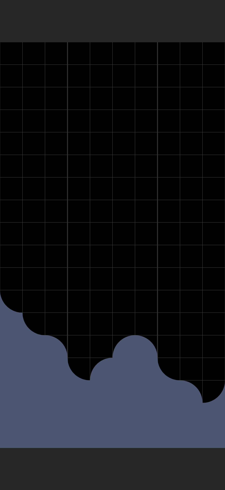
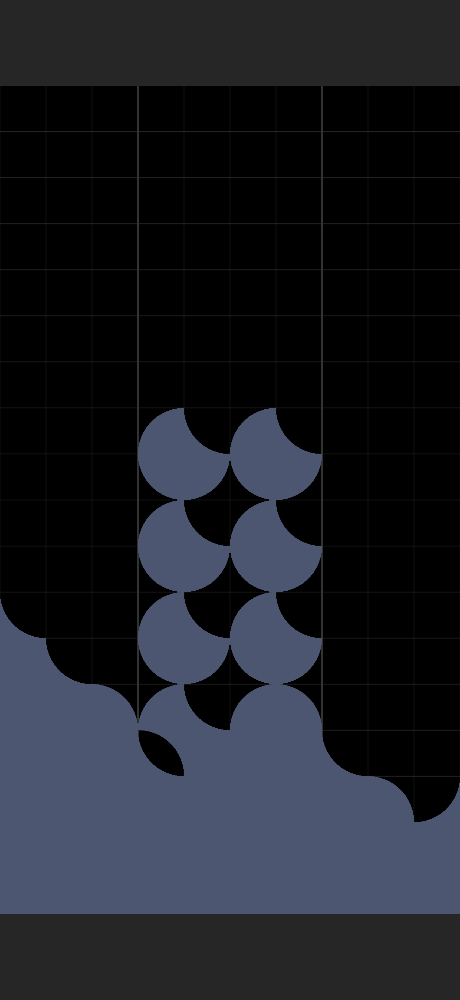
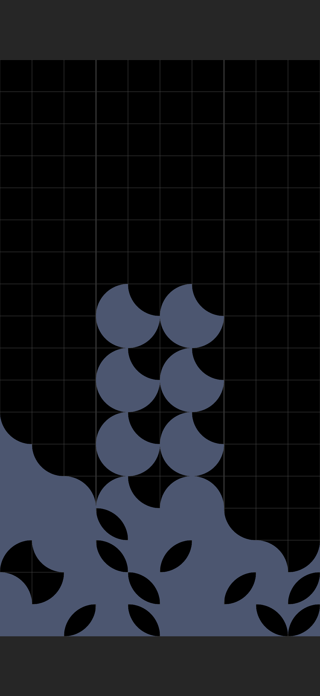
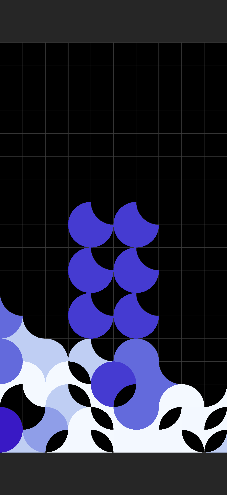

Design Notes
How QUARC creates infinite challenge mode boards
QUARC’s daily challenge is the same board for everyone on Earth, needs no server, and can be regenerated for any date past or future — because the whole thing unfolds from a single integer.
Classic QUARC starts with an empty board. Challenge mode instead populates the board with a randomized landscape of curved rubble, as if an alien has been there playing (badly) before you. It’s a new arrangement every day, the same one for every player, resetting at midnight Greenwich Mean Time. The obvious way to ship that is a server quietly handing out hand-made puzzles. QUARC has no server and no library of puzzles. The board for any given day is computed, on your device, from one number.
The number is the date
The daily seed is simple: take the seconds since 1970 and divide by the number of seconds in a day.
seed = Int(Date().timeIntervalSince1970) / 86400
That’s just “how many days since the epoch,” measured in UTC — so the whole world rolls over to a new board at the same instant, which (critically) is exactly when the leaderboard resets too. Feed that integer into a deterministic pseudorandom generator and every “random” decision made afterward is fixed in advance. The same day gives you the same seed, the same stream of numbers, and the same board — on every phone, with no network involved. We can render the board for New Year’s Eve, or an arbitrary Tuesday in 1976, by changing nothing but the integer.
Since every seemingly random decision is deterministic given the seed, the board generator is a pure function from one integer to a finished board.
The algorithm
A generator can do real damage if it just scatters shapes across the board. Curved pieces only fit where their curves are complementary — a convex curve fits into a concave curve, and nowhere else — so a careless arrangement of shapes produces boards that are impossible. Some are visually obvious if you’ve played the game, like sharp exposed vertical or horizontal edges that never happen naturally, but others are more subtle, like inaccessible holes larger than a single shape, which can never be filled.
QUARC was built with heavy use of Claude Code, but this was a case where it felt impossible to get Claude to understand the ideal state, and the constraints it had to meet, which felt easy for me to visualize after playing the classic mode of the game over and over again. After fighting many failure modes, in the end I sat down with a notebook and thought through the algorithm below, with illustrations, before implementing it.
It runs as a four-stage pipeline, each stage pulling from that single stream of numbers:
1. Contour — drawing a smooth skyline
First the generator walks across the board’s ten columns and lays down the surface of the landscape: a height and a curve for each column. It’s a constrained random walk. At every column it either holds its height and flips the curve around, or steps up or down a row and keeps it facing the same direction — and which one it does is governed by a pattern chosen for the day: flat, diagonal, a zigzag at one of three wavelengths, or random. Everything below the surface is made solid at this step.

The constraints are tight here. The leftmost column always opens facing inward and the rightmost is forced to close facing inward, so the silhouette meets both screen edges cleanly, leaving no narrow gaps. Two neighboring columns are never allowed to sit at the same height facing the same way, because that opens an impossible vertical seam.
2. Drops — let pieces fall
Onto that surface the generator drops extra pieces to build complexity and texture without introducing impossible holes. It picks a band of columns, how many pieces to drop in each one (from zero to five), and a shape theme — all one shape, one shape per column, one per row, with or without rotation, or purely random. Then, crucially, every piece falls through the actual physics of the game: it finds its true landing row, and if that landing would create a collision of convex curves — which destroys the piece in actual gameplay — the piece is rejected and a different shape is tried, up to twenty times. Nothing comes to rest that a player couldn’t have placed themselves.

3. Gaps — carve, don’t scatter
To make it a puzzle it needs to have holes — and in QUARC a hole is not a shape you draw, it’s a space you failed to fill. For a hole to be possible to fix, it needs to be the exact shape of a golden piece that could fill it. So instead of inventing gap shapes, the generator subtracts them.

The algorithm carves two kinds of negative space: a single-cell lemon-shaped gap formed by two concave curves, and a full two-by-two piece-shaped pocket. It will only cut a piece-shaped pocket where all four cells are filled and fully surrounded, so the hole is always a clean, closed, fillable shape rather than a notch leaking out to the edge. Where the algorithm carves is, once again, a pattern for the day — a light scattering, one or two complete rows, a pair of columns top to bottom, or a single diagonal slash across the board.
After the pattern of gaps is added, we scan for any row that happened to come out completely full and punch a single lemon-shaped gap through it: a board should never hand you a cleared row for free on turn one — you have to earn it.
4. Colorize
Everything up to here is done in neutral gray; not one decision depends on color. Only at the very end does a final pass walk the finished terrain and paint it as if it were made of real colored pieces — matching each two-by-two patch of curves to an actual piece shape (and the half-pieces along the edges, and the quarter-pieces in the corners), preferring the rounder shapes over spiky stars, and washing whatever’s left over in the star color (often in shapes that would be impossible to create by playing). Logic first, in monochrome; color strictly on top.

Why do it this way
I could have hand-built a few hundred boards and shipped them in a file. Generating them instead means the supply never runs dry, the app stays tiny, there’s nothing to host or break, and every player anywhere is provably solving the identical board — which is the entire point of a daily leaderboard. But the part I actually care about is that the board never gives you something impossible to tackle. And the randomness has a grammar: each day commits to a few themes — a diagonal contour, all-circle drops, complete-column gaps — so the board feels like a small piece of art even though there is no artist.
If you want today’s board, try challenge mode for free by downloading QUARC on the App Store — I can guarantee there’s always a new one waiting.
— —